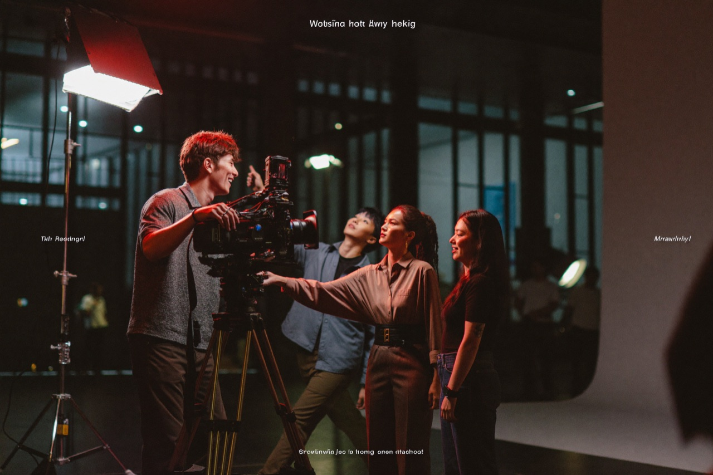

톤티비는 단순한 시청 플랫폼을 넘어, 글로벌 콘텐츠 산업 종사자들에게 새로운 기회의 장을 연다. 제작사는 글로벌 시청자에게 작품을 직접 선보이고, 배우와 스태프는 국경을 넘어 활동 무대를 넓힌다.
특히 기존 방송사나 대형 OTT에서 기회를 얻기 어려웠던 신진 제작진과 신인 배우에게, 톤티비는 오직 실력으로 승부할 수 있는 열린 무대를 제공한다.
실력으로만 승부하는 무대
전통적인 영상 산업은 진입장벽이 높다. 방송사 편성, 대형 제작사의 캐스팅, 거대 자본의 투자 — 이 관문을 통과하지 못하면 아무리 좋은 기획과 연기도 빛을 보기 어렵다. 톤티비는 이 관문 자체를 다시 설계한다. 작품의 가치는 편성표가 아니라 시청자의 반응으로 증명된다.
전 세계 콘텐츠 제작사는 톤티비를 통해 글로벌 시청자에게 작품을 직접 선보일 수 있고, 배우와 스태프는 국경을 넘어 활동 무대를 넓힌다. 신인에게 ‘기회의 평등’을, 시청자에게 ‘발견의 즐거움’을 동시에 제공하는 구조다.
플랫폼이 만드는 일자리
이는 콘텐츠 기획·제작·연기·후반작업에 이르는 전 영역의 새로운 일자리 창출로 이어진다. 카메라 앞의 배우뿐 아니라, 카메라 뒤의 작가·연출·촬영·편집·색보정 인력까지 — 하나의 작품이 만들어질 때마다 새로운 일자리가 생긴다.
톤티비는 시청자에게는 최고의 경험을, 창작자에게는 새로운 무대를, 그리고 산업에는 새로운 일자리를 만들어내는 플랫폼이 될 것이다. — 토니(Tony), 톤코퍼레이션 CTO
톤티비는 글로벌 콘텐츠 생태계의 성장과 함께 양질의 일자리를 만들어내는 플랫폼이 되겠다는 구상이다. 베트남을 비롯한 현지 지사 기반의 저비용·고효율 제작 구조는, 더 많은 작품과 더 많은 기회를 가능하게 한다.
블로그 전체 보기